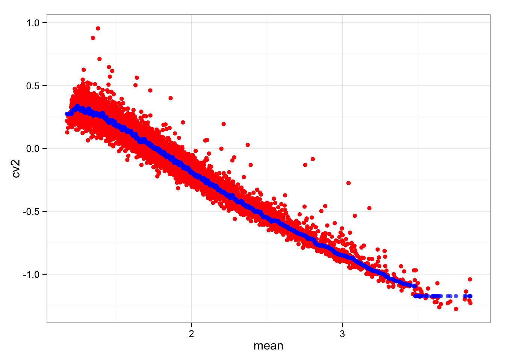

Last updated: 2015-10-14
Code version: ad00494d79195dafacf84a4ae0b08314007456b3
Previously, we normalized coefficient of variations across samples and showed that this normalized measure is independent of mean moleucle count and also percent of zero-count cells.
Here we will look more into the annotations of these genes; specifically, among the genes that we observe significant individual differences, is there any cell-cycle genes pluripotent genes?
log10(CVgk2) = log10(CVg2) + ϵgk
where ϵgk is independent distributed as a normal random variables for each gene g and sample k.
Equivalent,
$$log10(\frac{\sigma^2_{gk}}{\mu^2_{gk}}) = log10(\frac{\sigma^2_{g}}{\mu^2_{g}}) + \epsilon_{gk}$$
library("data.table")
library("dplyr")
library("limma")
library("edgeR")
library("ggplot2")
library("grid")
theme_set(theme_bw(base_size = 12))
source("functions.R")Input annotation of only QC-filtered single cells
anno_qc <- read.table("../data/annotation-filter.txt", header = TRUE,
stringsAsFactors = FALSE)
head(anno_qc) individual replicate well batch sample_id
1 NA19098 r1 A01 NA19098.r1 NA19098.r1.A01
2 NA19098 r1 A02 NA19098.r1 NA19098.r1.A02
3 NA19098 r1 A04 NA19098.r1 NA19098.r1.A04
4 NA19098 r1 A05 NA19098.r1 NA19098.r1.A05
5 NA19098 r1 A06 NA19098.r1 NA19098.r1.A06
6 NA19098 r1 A07 NA19098.r1 NA19098.r1.A07Input molecule counts that are filtered, transformed, and also processed to remove unwanted variation from batch effet. ERCC genes are also removed.
molecules_qc <- read.table("../data/molecules-final.txt", header = TRUE, stringsAsFactors = FALSE)Input moleclule counts before log2 CPM transformation.
molecules_filter <- read.table("../data/molecules-filter.txt", header = TRUE, stringsAsFactors = FALSE)
molecules_filter <- molecules_filter[which(rownames(molecules_filter) %in% rownames(molecules_qc)), ]
stopifnot(dim(molecules_filter) == dim(molecules_qc))Compute per batch coefficient of variation.
Include only genes with positive coefficient of variation. Some genes in this data may have zero coefficient of variation, because we include gene with more than 0 count across all cells.
molecules_cv_batch <-
lapply(1:length(unique(anno_qc$batch)), function(per_batch) {
molecules_per_batch <- 2^molecules_qc[ , unique(anno_qc$batch) == unique(anno_qc$batch)[per_batch] ]
mean_per_gene <- apply(molecules_per_batch, 1, mean, na.rm = TRUE)
sd_per_gene <- apply(molecules_per_batch, 1, sd, na.rm = TRUE)
cv_per_gene <- data.frame(mean = mean_per_gene,
sd = sd_per_gene,
cv = sd_per_gene/mean_per_gene)
rownames(cv_per_gene) <- rownames(molecules_qc)
cv_per_gene <- cv_per_gene[rowSums(is.na(cv_per_gene)) == 0, ]
cv_per_gene$batch <- unique(anno_qc$batch)[per_batch]
# Add sparsity percent
molecules_count <- molecules_filter[ , unique(anno_qc$batch) == unique(anno_qc$batch)[per_batch]]
cv_per_gene$sparse <- rowMeans(as.matrix(molecules_count) == 0)
return(cv_per_gene)
})
names(molecules_cv_batch) <- unique(anno_qc$batch)
dim(molecules_cv_batch[[1]])[1] 10483 5Merge summary data.frames.
df_plot <- do.call(rbind, molecules_cv_batch)Compute rolling medians.
library(zoo)
# Compute a data-wide coefficient of variation on CPM normalized counts.
data_cv <- apply(2^molecules_qc, 1, sd)/apply(2^molecules_qc, 1, mean)
# Order of genes by mean expression levels
order_gene <- order(apply(2^molecules_qc, 1, mean))
# Rolling medians of log10 squared CV by mean expression levels
roll_medians <- rollapply(log10(data_cv^2)[order_gene], width = 50, by = 25,
FUN = median, fill = list("extend", "extend", "NA") )
ii_na <- which( is.na(roll_medians) )
roll_medians[ii_na] <- median( log10(data_cv^2)[order_gene][ii_na] )
names(roll_medians) <- rownames(molecules_qc)[order_gene]
# re-order rolling medians
reorder_gene <- match(rownames(molecules_qc), names(roll_medians) )
head(reorder_gene)[1] 225 3650 4564 6158 3352 1963roll_medians <- roll_medians[ reorder_gene ]
head(names(roll_medians))[1] "ENSG00000237683" "ENSG00000188976" "ENSG00000187608" "ENSG00000188157"
[5] "ENSG00000078808" "ENSG00000176022"head(rownames(molecules_qc))[1] "ENSG00000237683" "ENSG00000188976" "ENSG00000187608" "ENSG00000188157"
[5] "ENSG00000078808" "ENSG00000176022"Double-check the computation of rolling median.
ggplot(data.frame(cv2 = log10(data_cv^2),
roll_medians = roll_medians,
mean = log10(apply(2^molecules_qc, 1, mean) ) ) )+
geom_point(aes(x = mean, y = cv2), col = "red") +
geom_point(aes(x = mean, y = roll_medians), col = "blue", alpha = .7)
Compute adjusted coefficient of variation.
# adjusted coefficient of variation on log10 scale
log10cv2_adj <-
lapply(1:length(molecules_cv_batch), function(per_batch) {
foo <- log10(molecules_cv_batch[[per_batch]]$cv^2) - roll_medians
return(foo)
})
df_plot$log10cv2_adj <- do.call(c, log10cv2_adj)limma lmFit function takes log-ratios or log-expression values and does not require default normalizations methods. This is because limma was originally designed for microarray data.
library(limma)
df_limma <- matrix(df_plot$log10cv2_adj,
nrow = nrow(molecules_qc), ncol = 9, byrow = FALSE)
design <- data.frame(individual = factor(rep(unique(anno_qc$individual), each = 3) ),
rep = factor(rep(c(1:3), times = 3)) )
colnames(df_limma) <- with(design, paste0(individual, rep))
fit_limma <- lmFit(df_limma, design = model.matrix( ~ individual, data = design))
fit_limma <- eBayes(fit_limma)False discover control adjutment.
F.p.adj <- p.adjust(fit_limma$F.p.value, method = "fdr")
summary(F.p.adj) Min. 1st Qu. Median Mean 3rd Qu. Max.
0.0000 0.6261 0.8358 0.7541 0.9424 1.0000 Rank genes by FDR.
order_limma <- order(F.p.adj)Cutoffs
df_cuts <- data.frame(cuts = c(.001, .01, .05, .1, .15, .2))
df_cuts$sig_count <- sapply(1:6, function(per_cut) {
sum(F.p.adj < df_cuts$cuts[per_cut] )
})
df_cuts cuts sig_count
1 0.001 24
2 0.010 54
3 0.050 115
4 0.100 179
5 0.150 290
6 0.200 423Input pluripotency genes. A list of 27 pluripotency genes used to demonstrate iPSC heterogeneity in Narshinh2011 Gene ID conversion was done by using the DAVID http://david.abcc.ncifcrf.gov
pluripotency_genes <- read.table("../data/pluripotency-genes.txt", header = TRUE, sep="\t")pluripotent_count <- lapply(1:nrow(df_cuts), function(per_cut) {
is_pluripotent <- rownames(molecules_qc)[which(F.p.adj< df_cuts$cuts[per_cut])] %in% pluripotency_genes$To
sum(is_pluripotent)
})
pluripotent_count <- do.call(rbind, pluripotent_count)
rownames(pluripotent_count) <- df_cuts$cuts
kable(pluripotent_count)| 0.001 | 0 |
| 0.01 | 0 |
| 0.05 | 0 |
| 0.1 | 0 |
| 0.15 | 0 |
| 0.2 | 0 |
Input cell cycle gene Gene sets reflecting 5 cell cycle phases were taken from Table S2 of Macosko2015 Gene ID conversion was done by using the DAVID http://david.abcc.ncifcrf.gov
cell_cycle_genes <- read.table("../data/cellcyclegenes.txt", header = TRUE, sep="\t")cell_cycle_count <- lapply(1:nrow(df_cuts), function(per_cut) {
per_cycle <- sapply(1:ncol(cell_cycle_genes), function(per_cycle) {
is_cell_cycle <- rownames(molecules_qc)[which(F.p.adj< df_cuts$cuts[per_cut])] %in% cell_cycle_genes[[per_cycle]]
sum(is_cell_cycle)
})
})
cell_cycle_count <- do.call(rbind, cell_cycle_count)
colnames(cell_cycle_count) <- colnames(cell_cycle_genes)
rownames(cell_cycle_count) <- df_cuts$cuts
cell_cycle_count <- cbind(df_cuts, cell_cycle_count)
kable(cell_cycle_count)| cuts | sig_count | G1.S | S | G2.M | M | M.G1 | |
|---|---|---|---|---|---|---|---|
| 0.001 | 0.001 | 24 | 0 | 0 | 0 | 0 | 0 |
| 0.01 | 0.010 | 54 | 0 | 0 | 1 | 0 | 0 |
| 0.05 | 0.050 | 115 | 0 | 1 | 2 | 1 | 1 |
| 0.1 | 0.100 | 179 | 1 | 1 | 2 | 1 | 1 |
| 0.15 | 0.150 | 290 | 1 | 3 | 6 | 1 | 3 |
| 0.2 | 0.200 | 423 | 2 | 5 | 6 | 4 | 4 |
FDR < .001
library(knitr)
library(mygene)
kable(queryMany(rownames(molecules_qc)[which(F.p.adj< .001)], scopes="ensembl.gene",
fields=c("name", "summary"), species="human") )Finished
Pass returnall=TRUE to return lists of duplicate or missing query terms.| name | query | _id | summary | notfound |
|---|---|---|---|---|
| peptidylprolyl isomerase A (cyclophilin A)-like 4G | ENSG00000236334 | 644591 | NA | NA |
| regulator of G-protein signaling 5 | ENSG00000143248 | 8490 | This gene encodes a member of the regulators of G protein signaling (RGS) family. The RGS proteins are signal transduction molecules which are involved in the regulation of heterotrimeric G proteins by acting as GTPase activators. This gene is a hypoxia-inducible factor-1 dependent, hypoxia-induced gene which is involved in the induction of endothelial apoptosis. This gene is also one of three genes on chromosome 1q contributing to elevated blood pressure. Alternatively spliced transcript variants have been identified. | NA |
| vimentin | ENSG00000026025 | 7431 | This gene encodes a member of the intermediate filament family. Intermediate filamentents, along with microtubules and actin microfilaments, make up the cytoskeleton. The protein encoded by this gene is responsible for maintaining cell shape, integrity of the cytoplasm, and stabilizing cytoskeletal interactions. It is also involved in the immune response, and controls the transport of low-density lipoprotein (LDL)-derived cholesterol from a lysosome to the site of esterification. It functions as an organizer of a number of critical proteins involved in attachment, migration, and cell signaling. Mutations in this gene causes a dominant, pulverulent cataract. | NA |
| inositol polyphosphate-5-phosphatase F | ENSG00000198825 | 22876 | The protein encoded by this gene is an inositol 1,4,5-trisphosphate (InsP3) 5-phosphatase and contains a Sac domain. The activity of this protein is specific for phosphatidylinositol 4,5-bisphosphate and phosphatidylinositol 3,4,5-trisphosphate. Alternatively spliced transcript variants encoding multiple isoforms have been observed for this gene. | NA |
| MT-RNR2-like 8 | ENSG00000255823 | 100463486 | NA | NA |
| ferritin, heavy polypeptide 1 | ENSG00000167996 | 2495 | This gene encodes the heavy subunit of ferritin, the major intracellular iron storage protein in prokaryotes and eukaryotes. It is composed of 24 subunits of the heavy and light ferritin chains. Variation in ferritin subunit composition may affect the rates of iron uptake and release in different tissues. A major function of ferritin is the storage of iron in a soluble and nontoxic state. Defects in ferritin proteins are associated with several neurodegenerative diseases. This gene has multiple pseudogenes. Several alternatively spliced transcript variants have been observed, but their biological validity has not been determined. | NA |
| ribosomal protein S27-like | ENSG00000185088 | 51065 | This gene encodes a protein sharing 96% amino acid similarity with ribosomal protein S27, which suggests the encoded protein may be a component of the 40S ribosomal subunit. | NA |
| metallothionein 2A | ENSG00000125148 | 4502 | NA | NA |
| metallothionein 1E | ENSG00000169715 | 4493 | NA | NA |
| metallothionein 1F | ENSG00000198417 | 4494 | NA | NA |
| metallothionein 1H | ENSG00000205358 | 4496 | NA | NA |
| metallothionein 1X | ENSG00000187193 | 4501 | NA | NA |
| profilin 1 | ENSG00000108518 | 5216 | This gene encodes a member of the profilin family of small actin-binding proteins. The encoded protein plays an important role in actin dynamics by regulating actin polymerization in response to extracellular signals. Deletion of this gene is associated with Miller-Dieker syndrome, and the encoded protein may also play a role in Huntington disease. Multiple pseudogenes of this gene are located on chromosome 1. | NA |
| MT-RNR2-like 1 | ENSG00000256618 | 100462977 | NA | NA |
| NLR family, pyrin domain containing 2 | ENSG00000022556 | 55655 | NALP proteins, such as NALP2, are characterized by an N-terminal pyrin (MIM 608107) domain (PYD) and are involved in the activation of caspase-1 (CASP1; MIM 147678) by Toll-like receptors (see TLR4; MIM 603030). They may also be involved in protein complexes that activate proinflammatory caspases (Tschopp et al., 2003 [PubMed 12563287]). | NA |
| tissue factor pathway inhibitor (lipoprotein-associated coagulation inhibitor) | ENSG00000003436 | 7035 | This gene encodes a protease inhibitor that regulates the tissue factor (TF)-dependent pathway of blood coagulation. The coagulation process initiates with the formation of a factor VIIa-TF complex, which proteolytically activates additional proteases (factors IX and X) and ultimately leads to the formation of a fibrin clot. The product of this gene inhibits the activated factor X and VIIa-TF proteases in an autoregulatory loop. The encoded protein is glycosylated and predominantly found in the vascular endothelium and plasma in both free forms and complexed with plasma lipoproteins. Several alternatively spliced transcript variants of this gene have been described, but the full-length nature of some of these variants has not been confirmed. | NA |
| NA | ENSG00000184674 | NA | NA | TRUE |
| MT-RNR2-like 2 | ENSG00000269028 | 100462981 | NA | NA |
| pituitary tumor-transforming 2 | ENSG00000250254 | 10744 | NA | NA |
| coiled-coil domain containing 152 | ENSG00000198865 | 100129792 | NA | NA |
| protein kinase (cAMP-dependent, catalytic) inhibitor beta | ENSG00000135549 | 5570 | This gene encodes a member of the cAMP-dependent protein kinase inhibitor family. The encoded protein may play a role in the protein kinase A (PKA) pathway by interacting with the catalytic subunit of PKA, and overexpression of this gene may play a role in prostate cancer. Alternatively spliced transcript variants encoding multiple isoforms have been observed for this gene. | NA |
| fatty acid binding protein 7, brain | ENSG00000164434 | 2173 | The protein encoded by this gene is a brain fatty acid binding protein. Fatty acid binding proteins (FABPs) are a family of small, highly conserved, cytoplasmic proteins that bind long-chain fatty acids and other hydrophobic ligands. FABPs are thought to play roles in fatty acid uptake, transport, and metabolism. | NA |
| connective tissue growth factor | ENSG00000118523 | 1490 | The protein encoded by this gene is a mitogen that is secreted by vascular endothelial cells. The encoded protein plays a role in chondrocyte proliferation and differentiation, cell adhesion in many cell types, and is related to platelet-derived growth factor. Certain polymorphisms in this gene have been linked with a higher incidence of systemic sclerosis. | NA |
| coiled-coil-helix-coiled-coil-helix domain containing 2 | ENSG00000106153 | 51142 | NA | NA |
sessionInfo()R version 3.2.0 (2015-04-16)
Platform: x86_64-unknown-linux-gnu (64-bit)
locale:
[1] LC_CTYPE=en_US.UTF-8 LC_NUMERIC=C
[3] LC_TIME=en_US.UTF-8 LC_COLLATE=en_US.UTF-8
[5] LC_MONETARY=en_US.UTF-8 LC_MESSAGES=en_US.UTF-8
[7] LC_PAPER=en_US.UTF-8 LC_NAME=C
[9] LC_ADDRESS=C LC_TELEPHONE=C
[11] LC_MEASUREMENT=en_US.UTF-8 LC_IDENTIFICATION=C
attached base packages:
[1] stats4 parallel grid stats graphics grDevices utils
[8] datasets methods base
other attached packages:
[1] mygene_1.2.3 GenomicFeatures_1.20.1 AnnotationDbi_1.30.1
[4] Biobase_2.28.0 GenomicRanges_1.20.5 GenomeInfoDb_1.4.0
[7] IRanges_2.2.4 S4Vectors_0.6.0 BiocGenerics_0.14.0
[10] zoo_1.7-12 ggplot2_1.0.1 edgeR_3.10.2
[13] limma_3.24.9 dplyr_0.4.2 data.table_1.9.4
[16] knitr_1.10.5
loaded via a namespace (and not attached):
[1] Rcpp_0.12.0 lattice_0.20-31
[3] Rsamtools_1.20.4 Biostrings_2.36.1
[5] assertthat_0.1 digest_0.6.8
[7] R6_2.1.1 plyr_1.8.3
[9] chron_2.3-45 acepack_1.3-3.3
[11] futile.options_1.0.0 RSQLite_1.0.0
[13] evaluate_0.7 sqldf_0.4-10
[15] httr_0.6.1 highr_0.5
[17] zlibbioc_1.14.0 rpart_4.1-9
[19] gsubfn_0.6-6 rmarkdown_0.6.1
[21] proto_0.3-10 labeling_0.3
[23] splines_3.2.0 BiocParallel_1.2.2
[25] foreign_0.8-63 stringr_1.0.0
[27] RCurl_1.95-4.6 biomaRt_2.24.0
[29] munsell_0.4.2 rtracklayer_1.28.4
[31] htmltools_0.2.6 nnet_7.3-9
[33] gridExtra_0.9.1 Hmisc_3.16-0
[35] XML_3.98-1.2 GenomicAlignments_1.4.1
[37] MASS_7.3-40 bitops_1.0-6
[39] jsonlite_0.9.16 gtable_0.1.2
[41] DBI_0.3.1 magrittr_1.5
[43] formatR_1.2 scales_0.2.4
[45] stringi_0.4-1 XVector_0.8.0
[47] reshape2_1.4.1 latticeExtra_0.6-26
[49] futile.logger_1.4.1 Formula_1.2-1
[51] RColorBrewer_1.1-2 lambda.r_1.1.7
[53] tools_3.2.0 survival_2.38-1
[55] yaml_2.1.13 colorspace_1.2-6
[57] cluster_2.0.1